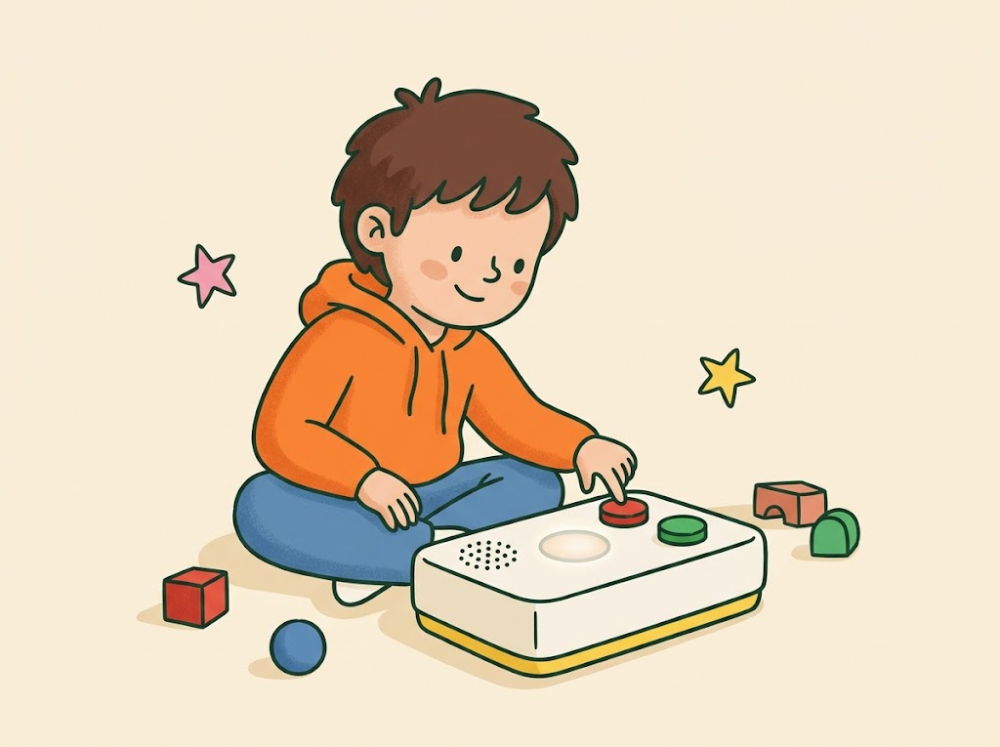
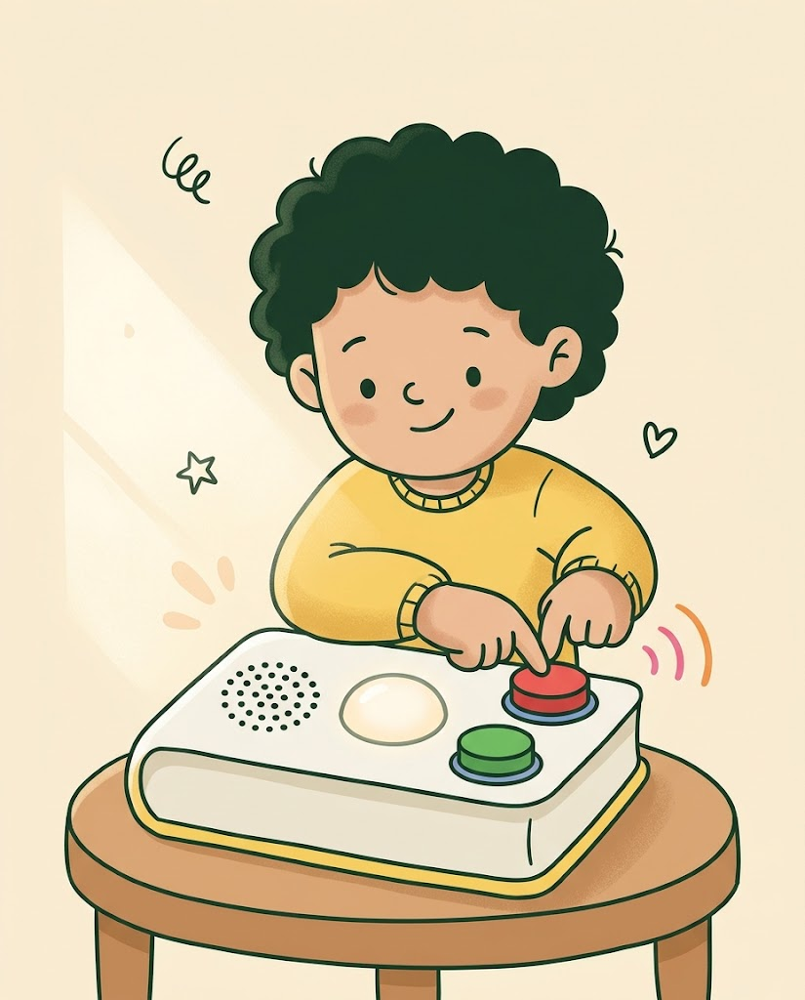
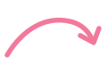
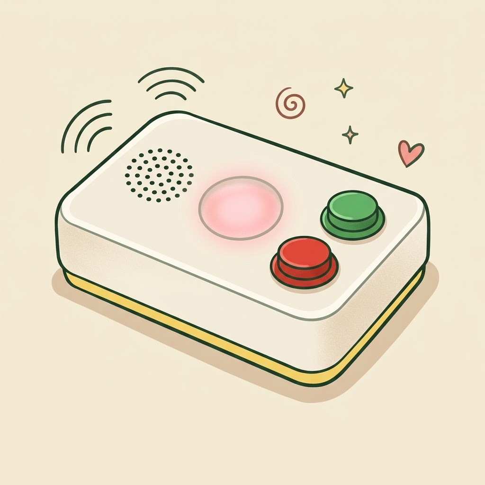
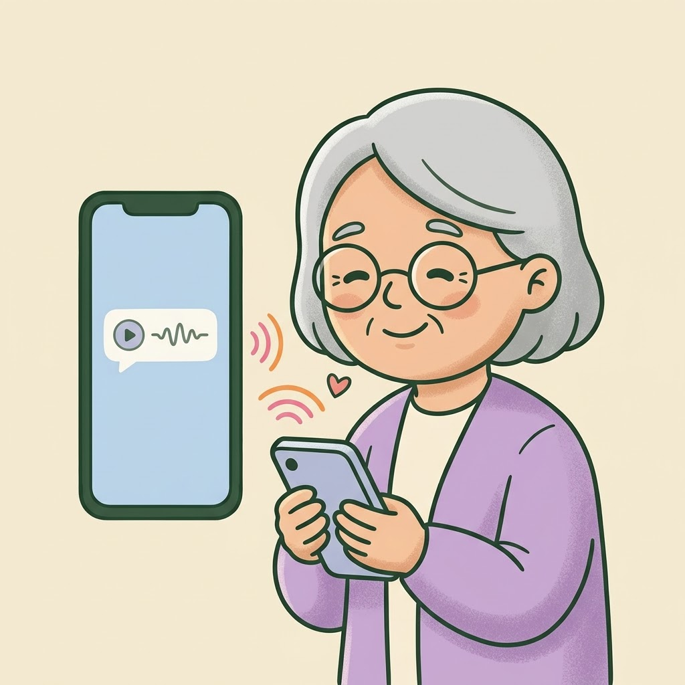
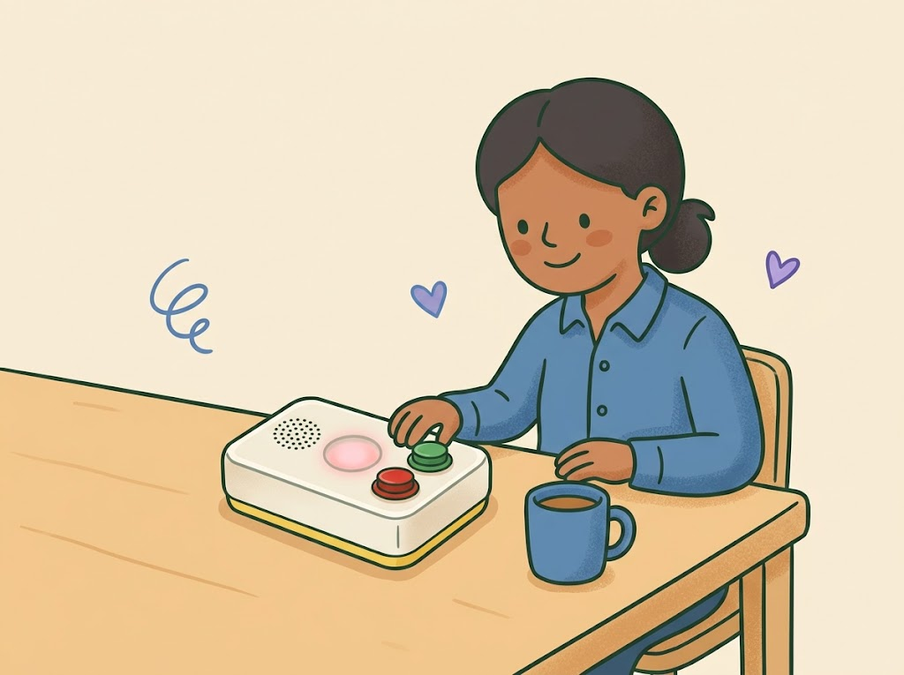
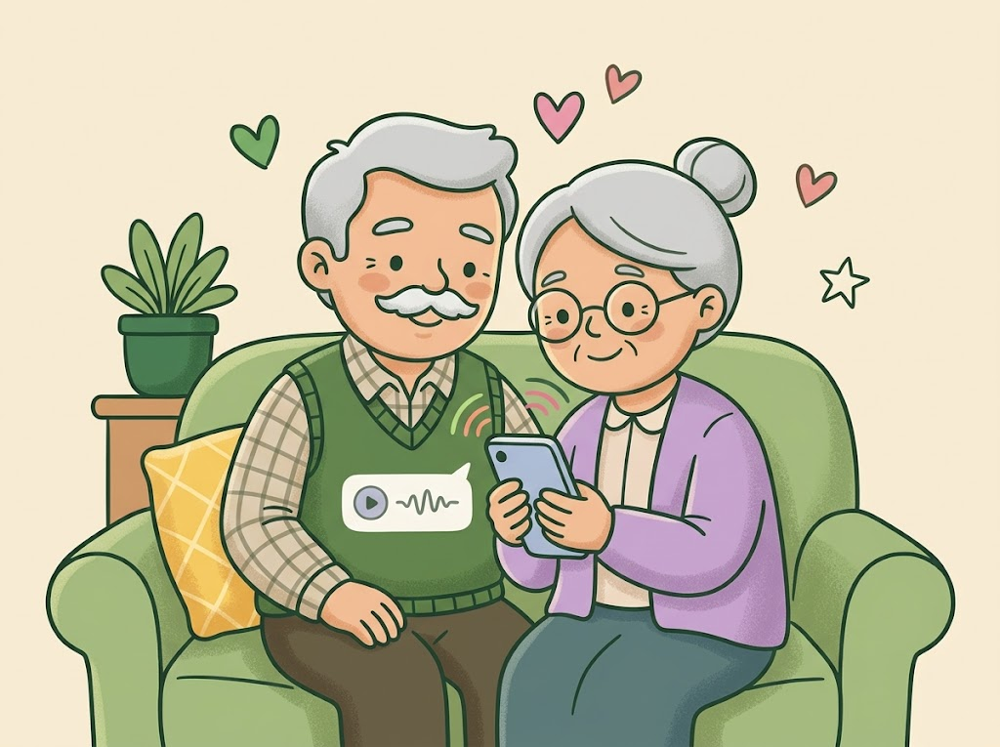

familia-ninoHabla solo, sin ayuda.
Rojo para hablar, verde para escuchar. No necesita leer ni pedirle el celular a nadie.
Dos botones para hablar con toda la familia. Ellos responden desde el WhatsApp que ya tienen.
Proyecto en prueba de concepto. La caja está diseñada, aún no construida.

hero-nino

que-es-caja
que-es-abuelaWoKiToKi es una caja con dos botones y una luz, pensada para niños de 3 a 7 años que todavía no leen.
El niño aprieta el botón rojo y habla. Su voz le llega a la familia como una nota de voz en WhatsApp. Cuando la abuela responde, suena su melodía, la luz se enciende en su color y el niño aprieta el botón verde para escucharla.
Sin pantalla. Sin texto. Solo la voz de su familia.
Lo mantiene apretado mientras habla y lo suelta para enviar.
Un toque y suena el siguiente mensaje de la familia.
Así sabe que tiene un mensaje, y de quién es, sin leer nada.
Tres notas y un color propios: la abuela suena distinto que el tío.
La familia escucha y responde igual que con cualquier audio.
Los adultos usan el WhatsApp que ya tienen en su celular.
Mantén apretado el rojo para hablar y suelta para enviar. Aprieta el verde para escuchar lo que te dejó la familia. Los sonidos se activan con tu primer toque.

familia-ninoRojo para hablar, verde para escuchar. No necesita leer ni pedirle el celular a nadie.

familia-papasSin aplicaciones nuevas ni cuentas para el niño. Ustedes deciden quién está en su familia.

familia-abuelosReciben la voz del niño como nota de voz y contestan igual, desde donde estén.
Desarma la caja pieza por pieza y mira qué pasa cuando se aprieta cada botón.
Render conceptual · la caja está diseñada, aún no construida
Te contamos cómo está diseñado y en qué estado está cada medida. WoKiToKi es una prueba de concepto, no un producto terminado.
Implementado ya funciona en el prototipo Diseñado falta construirlo en la caja Principio guía todo el producto
Diseñado para aceptar solo esos números; así funciona ya en la conexión del prototipo. Los mensajes de cualquier otro se ignoran.
No hay pantalla, navegador ni búsquedas. Solo la voz de su familia.
Un tope de volumen para cuidar sus oídos.
No hay escucha pasiva ni palabra de activación. Al soltar, deja de grabar.
Textos, fotos y stickers que lleguen por WhatsApp se ignoran.
La voz del niño nunca se escribe en los registros del sistema; solo datos como la duración del mensaje.
Una caja con dos botones y una luz que permite a un niño de 3 a 7 años enviar y recibir mensajes de voz con su familia, que los recibe y responde desde WhatsApp.
No, y es deliberado. Toda la interacción es sonido, luz y tacto.
No. Usa su WhatsApp normal: recibe notas de voz y responde con notas de voz.
Cada familiar tiene una melodía de tres notas y un color propios, que suenan y se encienden antes de su voz.
El sistema está diseñado para aceptar solo mensajes de números autorizados por la familia; los demás se ignoran.
No. Está diseñada para grabar solo mientras el botón rojo está apretado. No hay escucha pasiva ni palabra de activación.
El mensaje se envía igual con lo que alcanzó a grabar. Solo un toque muy rápido no cuenta: suena un clic suave y no se envía nada, para que un roce sin querer no le llegue a la familia.
La caja está diseñada para funcionar con el WiFi de la casa.
Todavía no. El proyecto está en fase de prueba de concepto; la caja física está diseñada pero no construida. Si te interesa, déjanos tus datos y te avisamos.
Déjanos tus datos y te contamos cuando busquemos familias para el piloto. Sin compromiso.